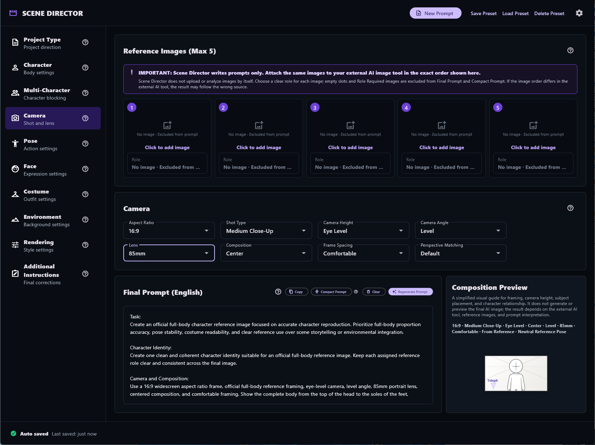
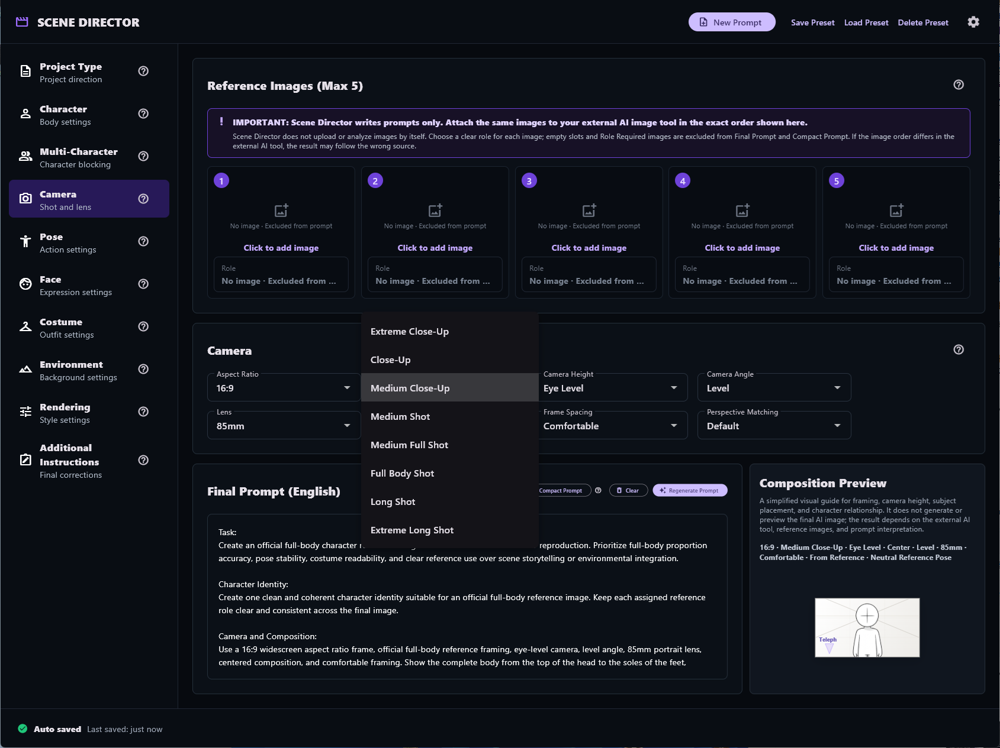

选择参考图像
选择 Project Type，添加最多五张参考图像，并为每张图像分配明确角色。
URSUS Loft 产品
为 Image-to-Image 生成提供结构化创意指导。
面向外部 AI 图像生成工作流程的本地提示词起草与参考图像整理工具。
由 URSUS Loft 开发并发布创作者署名：BEAR Works
应用内部
在一个本地工作流程中整理参考图像角色、场景控制和最终提示词。



概览
Scene Director 不是图像生成 AI，也不是图像生成服务器。它不会自动将参考图像上传到其他服务。
它帮助创作者整理图像角色和创意指导，并组装结构化的英文 Final Prompt。用户将该提示词复制到外部 AI 图像生成服务，并在那里自行上传参考图像。
核心工作流程
选择 Project Type，添加最多五张参考图像，并为每张图像分配明确角色。
设置角色、相机、姿势、面部、服装、环境、渲染和附加说明。
复制英文 Final Prompt，然后按相同顺序将相同参考图像上传到外部工具。
当前控制项
为每张参考图像分配明确角色。空槽位和 Role Required 图像不会包含在提示词输出中。
设置 Character、Camera、Pose、Face、Costume、Environment、Rendering 和 Additional Instructions。
根据当前设置生成详细的英文 Final Prompt 或更精简的 Compact Prompt。
自动恢复上次会话，并在本地保存、加载或删除命名预设。
参考图像顺序
请按照 Scene Director 中显示的准确顺序，将相同参考图像附加到外部 AI 工具。复制提示词前，可以为每张图像分配角色。
什么是 Scene Director
Scene Director 是一款用于构建 Image-to-Image 生成结构化提示词的 Windows 应用。它不是图像生成器，不运行 AI 图像模型，也不会自动上传参考图像。你需要将最终英文提示词复制到外部图像生成服务，并自行上传相同的参考图像。
当角色身份、体型、服装、姿势、面部表情、相机、构图、环境、渲染和附加说明混在一起时，它们可能相互争夺注意力。将这些内容分开，有助于更清楚地检查各自的角色和优先级，但并不承诺特定结果。
它适合 AI 图像创作者、故事板与概念艺术家、设计师、视觉指导、处理重复角色的创作者，以及经常重建复杂 Image-to-Image 提示词的人。
不会。它为外部图像生成服务准备提示词和参考图像整理信息。
不会。参考图像保持在应用内本地选择状态；你需要自行上传到外部服务。
当提示词说明引用图像顺序时，保持相同图像和相同顺序能让工作流程更容易理解和执行。
Final Prompt 是详细的英文输出；Compact Prompt 是基于当前设置生成的较短版本。
上次会话和预设设置会本地存储在 %APPDATA%\Scene Director 下。
不能。清晰的角色和结构化说明可以减少冲突细节，但外部服务和生成结果仍不在应用控制范围内。
面向参考图像驱动的 Image-to-Image 工作流程的实用指导。